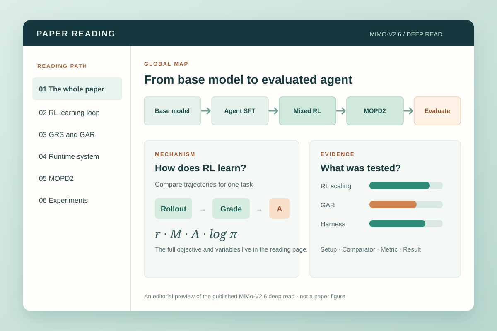

AN AGENT SKILL FOR DEEP PAPER READING
Turn a research paper into one visual reading atlas.
This open-source agent skill helps researchers, students, and engineers read academic papers deeply. Give it a PDF or paper URL; the default “read this paper” request produces one self-contained HTML explanation of the argument, method or proof, important equations, and experiments.

Explore complete readings
Choose a paper and read its full argument in one page. Each example has a paper-specific editorial map, linked mechanism explanations, original figure excerpts where useful, equations, and experiment conditions beside the results.
- Attention Is All You Need · English. Follow encoder and decoder tokens through attention, compute the key equation, then read translation tests, ablations, and parsing transfer. Open the complete reading →
- DeepSeek-V4.1-Flash · English. Separate prefill computation, runtime global KV, and persistent KV; inspect CED and CSA2 with original figures, then read agent benchmarks with their harness conditions. Open the complete reading →
- MiMo-V2.6 · 中文. Follow the training path through the RL objective, GRS/GAR grading, runtime system, MOPD2, and experiments. Open the complete reading →
- RAFT · 中文 · Kimi Code. See how data refinement and answer-conditioned on-policy distillation work together, then inspect the domain-versus-general-capability evidence. Made with Kimi Code after installing this skill, from arXiv:2606.00147v1. Open the complete reading →
The MiMo example was authored from a 44-page local PDF. The PDF itself is not redistributed here. The authors later updated the online report; the example incorporates the corrected Pro active-parameter figure, while other version differences have not been checked page by page.
What you get
- Whole-paper map. The question, setting, proposed idea, contributions, and where evidence enters.
- Method or argument path. Inputs, stages, branches, feedback, and outputs, with consequential arrows explained.
- Mechanism close-ups. Definitions, equations, assumptions, and a worked example where it helps.
- Experiment atlas. Each question linked to its setup, comparator, metric, observed result, and supported reading.
- Connected synthesis. What the method and evidence show together, with limits attached to the affected claims.
The diagrams guide reading; prose, formulas, tables, and original figures carry the detail. Source locations stay available for verification but are hidden by default in the HTML. The output is one offline-readable file, with Markdown as its audit source.
The reading method
The workflow combines established reading and knowledge-mapping ideas with a paper-specific editorial design. Its three checks answer different questions:
- Can we reconstruct the paper before explaining it? Keshav's three-pass approach moves from an overview to the paper's content and then to a detailed reconstruction. The skill uses the first pass to draft a provisional map, the second to follow methods and results, and the third to work through the decisive equations, assumptions, proofs, or experiments. A normal deep-read request completes the full route; a quick scan is a separate user choice.
- Does each diagram express a meaningful relationship? Novak and Cañas's concept-map method starts with a focus question and connects concepts with labeled relationships and cross-links. Here, a map answers a paper-specific question such as “How does the mechanism change the result?” Arrows say whether they mean data flow, process order, or evidence; the accompanying text explains what they connect.
- Can a reader check the explanation against the paper? SciDoc2Diagrammer-MAF reports that generated scientific diagrams can be incomplete or unfaithful to their source. This project takes that as a fidelity check: significant figures, formulas, numbers, and arrows must be checked against the source, and each experiment is read with its setup, comparator, metric, and result. It does not implement that paper's diagram-generation algorithm.
These ideas become the five reader-facing layers above: global map, main path, mechanism, experiment atlas, and synthesis. The test of a useful deep read is whether someone can explain the paper's central mechanism and say which evidence supports each important claim, without hunting through the PDF for missing essentials. This is the project's method design, not a claim that the published examples have been validated in a reader study.
The public reading-quality checks turn that intent into release gates for source coverage, scientific fidelity, claim-to-evidence links, reader completeness, and offline delivery. The reader tasks and answer keys make the four published examples testable by someone who did not write them. A renderer test or an author reviewing their own page is not an independent comprehension study.
Get started
Quick try in a Codex project: from your project directory, install the skill with the skills CLI, then check its bundled renderer. This creates a project-local .agents/skills/paper-reading copy.
npx --yes skills add xiaofengShi/paper-reading-skill --skill paper-reading --agent codex --copy --yes
(cd .agents/skills/paper-reading && npm ci && npm run doctor)
Codex and Kimi Code: install the repository as a personal skill, then install its rendering dependencies. Node.js 20 or newer is required for the bundled HTML renderer.
mkdir -p "$HOME/.agents/skills"
git clone https://github.com/xiaofengShi/paper-reading-skill.git "$HOME/.agents/skills/paper-reading"
(cd "$HOME/.agents/skills/paper-reading" && npm ci)
Check the installed renderer with (cd "$HOME/.agents/skills/paper-reading" && npm run doctor). It builds a complete Transformer example in a temporary directory and checks its language, math, navigation, and embedded diagram.
Claude Code: use its personal skills directory instead.
mkdir -p "$HOME/.claude/skills"
git clone https://github.com/xiaofengShi/paper-reading-skill.git "$HOME/.claude/skills/paper-reading"
(cd "$HOME/.claude/skills/paper-reading" && npm ci)
For this installation, run (cd "$HOME/.claude/skills/paper-reading" && npm run doctor) before starting a new agent session.
If the skill is already installed, update that checkout and its renderer dependencies instead of cloning over it. For Codex or Kimi Code, run git -C "$HOME/.agents/skills/paper-reading" pull --ff-only followed by (cd "$HOME/.agents/skills/paper-reading" && npm ci); for Claude Code, use the same commands with $HOME/.claude/skills/paper-reading.
Start a new agent session, attach a PDF or give an accessible paper URL, and ask: “Read this paper deeply in English. Give me one visual HTML reading document that explains the main path, important equations, and experiments.” Replace “in English” with your preferred language. If you give no language cue, the skill defaults to English; an ordinary request in Chinese produces Chinese output. The skill is named paper-reading; you can also invoke it explicitly as $paper-reading in Codex, /paper-reading in Claude Code, or /skill:paper-reading in Kimi Code. The agent needs access to the paper and must do the scientific reading; this repository supplies the workflow and renderer, not a service that automatically converts an arbitrary PDF into a verified explanation.
Ask for a quick scan only when you want triage. Ask for a review or research comparison when you want those additional lenses. An ordinary request to read a paper stays understanding-first.
How it works
The skill instructions guide an agent through orientation, full reconstruction, explanation, and source checking. Paper-type routes select suitable views for empirical, systems, benchmark, dataset, theory, and survey papers; visual-reading rules keep diagrams tied to explanations and evidence. Reading modes define the optional scan, review, and research lenses.
The bundled renderer turns a Markdown audit source and local visuals into a standalone HTML file with embedded images, diagrams, KaTeX math, and fonts. Every source begins with an explicit language marker, <!-- paper-reading-lang: en --> or <!-- paper-reading-lang: zh-CN -->, which also sets navigation and chart labels. Archify can render optional interactive structure views, but neither Archify nor another locally installed skill is required. The Transformer, DeepSeek, MiMo, and RAFT Markdown sources and visual inputs are build materials, not separate reading pages.
To rebuild all published examples locally:
npm ci
npm run doctor
npm run build:examples
npm test
Validation and scope
The four documents exercise an influential architecture paper, two technical reports, and a domain fine-tuning paper with different mechanism and evaluation structures. Renderer tests cover language declarations, inline and display math, source-location visibility, figure context, and numerical chart behavior. These checks verify rendering contracts; they do not independently certify every scientific interpretation. Theory, surveys, datasets, and independent reader studies remain outside the current example set.
Archify is an optional presentation tool for interactive structure diagrams. Scientific fidelity still depends on reading and checking the source paper.
Questions, bug reports, and examples from other paper types are welcome in GitHub Issues. The project is MIT licensed.
Maintainer notes
This README is the English source for the default project website; README.zh-CN.md is the source for the Chinese page. Run npm run build:docs after editing either language, and commit the generated HTML together with the Markdown. The site generator is scripts/build-docs.cjs.